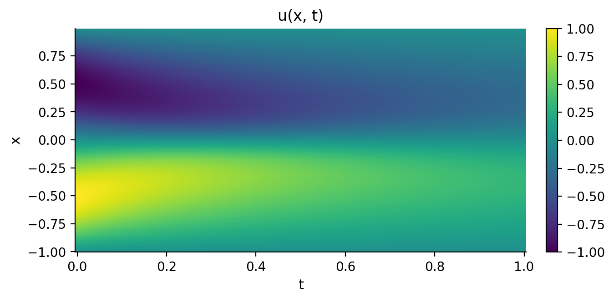
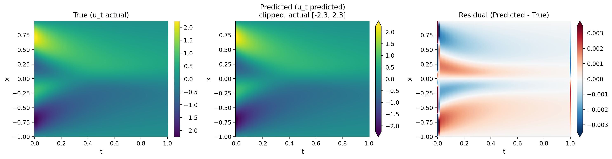
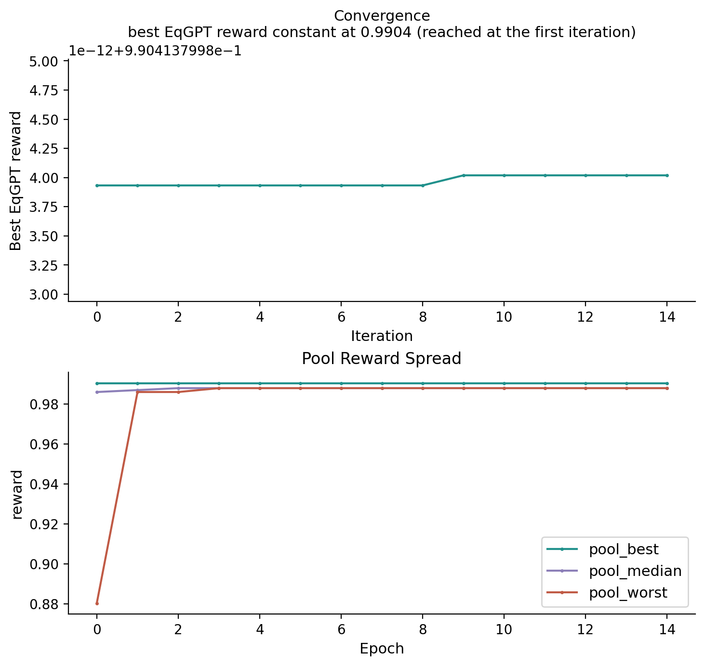

EqGPT
A pretrained transformer proposes equations and is fine-tuned on candidates ranked by their fit to data.
Usage
import kd
from kd import EqGPTConfig
dataset = kd.generate_burgers_data(nx=256, nt=101, nu=0.1, seed=42)
model = kd.Model(algorithm="eqgpt", generations=15, config=EqGPTConfig.burgers_preset())
model.fit(dataset)
The checkpoint is distributed by the authors of the paper below and is used
here with their permission. EqGPTConfig.burgers_preset() in this example
sets sparsity_alpha=0.02.
Main parameters
| Parameter | Default | Resume | Description |
|---|---|---|---|
samples_per_epoch |
400 |
resume-safe | GPT samples per Runner iteration. |
top_k |
10 |
resume-safe | Elite-pool and fine-tune slice size; on a resume a smaller value truncates the restored pool, while a larger one does not widen it (the merge never grows a non-empty pool). |
sparsity_alpha |
required | resume-safe | Problem-specific sparsity weight. |
finetune_lr |
1e-05 |
resume-safe | GPT fine-tuning learning rate. |
exploration_rate |
0.2 |
resume-safe | Sampling exploration rate. |
All fields of EqGPTConfig
| Field | Type | Default |
|---|---|---|
sparsity_alpha |
float |
required |
seed |
int |
0 |
samples_per_epoch |
int |
400 |
top_k |
int |
10 |
finetune_lr |
float |
1e-05 |
finetune_steps |
int |
5 |
exploration_rate |
float |
0.2 |
max_length |
int |
49 |
variables |
tuple[str, ...] \| None |
None |
start_words |
tuple[str, ...] |
('S', 'ut', '+') |
masked_tokens |
frozenset[int] |
frozenset() |
weights_path |
Path \| None |
None |
asset_dir |
Path \| None |
None |
case_filter |
str \| None |
None |
wave_pkl_path |
Path \| None |
None |
v1_asset_dir |
Path \| None |
None |
reward_points_per_window |
int |
50 |
coeff_points_per_window |
int |
100 |
primary_case |
str \| None |
None |
steady |
bool |
False |
steady_activation |
Literal['sin', 'rational'] \| None |
None |
steady_boundary_delete_num |
int \| None |
None |
steady_polar_eval |
bool |
False |
steady_constant_column |
bool |
False |
steady_train_points |
int |
10000 |
steady_validate_points |
int |
1000 |
steady_train_iters |
int |
50000 |
steady_surrogate_seed |
int |
525 |
Search space
EqGPT samples equations from a fixed vocabulary of terms, then fits their
coefficients against data. The single-case evolution path uses one field u,
a time axis and one to three spatial axes named x, y or z. In evolution mode the prefix S ut + fixes the
left-hand side, and right-hand-side terms combine atoms by multiplication,
division and addition. The vocabulary comes with KD; no candidate-term library
is supplied by the caller.
Sampling masks tokens containing t, tokens referring to absent axes,
derivatives beyond the active provider's order, tokens without an IR mapping,
and masked_tokens. On a time axis and one spatial axis x, the evolution
finite-difference path admits these 21 atoms: u, ux, uxx, uxxx, ux^2,
u^2, u^3, x, x^2, x^4, sin(u), sinx, exp(x), (uux)x,
(uux)xx, (u^3)xx, (u^4)xx, (1/u)xx, (u^-2*ux)x,
(u(u^2)xx)xx and (uxx+ux/x)^2. Higher atomic x-derivatives exceed that
provider's cap; mixed space-time terms, explicit time dependence, sqrt and
sinh are not in this search space.
Sentence gates give zero reward to the term combinations {u, sin(u)},
{u, sinh(u)}, {sin(u), sinh(u)}, {u, u^2, u^3} and {x, sinx}.
Another gate requires every declared axis to occur unless the sentence contains
Laplace. The pinned ut covers time, so an evolution candidate must also
represent its spatial axes. These gates act before fitting.
For a steady problem on scattered (x, y) coordinates, configure steady,
steady_activation and start_words=["S"] together. This mode trains its own
surrogate before search. sparsity_alpha is required because the appropriate
penalty depends on the problem; the packaged presets supply explicit values.
Pretrained model
The checkpoint is downloaded from the KD Hub mirror on first use and cached.
An uncached run needs network access. KD_EQGPT_ASSET_DIR can point to a local
directory containing gpt_model/PDEGPT_wave_breaking.pt; the Python API also
accepts EqGPTConfig(weights_path=...) or asset_dir. The mirror is
timeoutHao/KD-data, with a pinned revision and SHA-256 verification.
Multi-case wave mode also needs WaveBreaking.pkl and per-case surrogates;
KD_V1_WAVE_ASSETS selects local assets instead of the Hub copy.
Method
The proposer is a decoder-only transformer with six layers, eight heads,
model dimension 768 and a context of 50, over 56 vocabulary tokens plus a pad
slot. It is pretrained on equations collected from mathematical handbooks.
Sampling alternates between a term token and E, +, * or /. With
probability exploration_rate, a token is drawn uniformly from the legal set;
otherwise the transformer evaluates the current prefix.
Each accepted sentence converts to KD IR terms, and the platform executes
one column per term. Least squares fits the relation and the reward combines
centered R² with a penalty on the column count. Each epoch merges candidates
into a reward-deduplicated elite pool of size top_k, then fine-tunes on that
pool with Adam at finetune_lr for finetune_steps steps. One epoch is one KD
iteration, controlled by generations.
Result interpretation
The reward is R² * (1 - sparsity_alpha * log10(k)), where k counts distinct
columns including the pinned left-hand-side column. R² measures the derivative
fit in evolution mode. The penalty lowers the attainable reward as columns
are added; it is not an NMSE alone. A zero reward can result from a sentence
gate, while a negative reward is a fitted relation worse than predicting the
mean. Candidates that fail execution or matrix construction can be discarded
before reaching the pool; no candidate is an invalid result.
model.best_expr_ lists structural terms without fitted coefficients.
model.result_.equation carries the native fitted coefficients aligned with
those terms. Evolution-mode final coefficients and NMSE are evaluated on the
full coefficient domain against the un-negated time derivative; that domain
can differ from the sampled reward domain. IR uses names such as u_x,
u_xx, n2(u), diff_x(mul(u, u_x)) and diff2_x(mul(u, u_x)), rather
than the vocabulary's ux, uxx, u^2, (uux)x and (uux)xx.
The per-epoch record includes pool reward statistics and fine-tuning loss. A low reward warrants checking whether the required atoms and combinations are expressible before increasing the sample budget. Because the prior was trained on named textbook equations, a familiar law can be proposed from that prior as well as selected by its fit to data.
References
Xu et al. (2025). "Generative discovery of partial differential equations by learning from math handbooks". Nat. Commun. 16, 10255. Paper
Code: woshixuhao/EqGPT
Implementation notes. KD drives the published checkpoint through its own sampler and reward. The
unused decoder-encoder attention submodule is omitted; forward equivalence
was checked on checkpoint logits, and the vocabulary is copied byte for byte.
Sampling follows the same legal mechanism without reproducing the reference's
random stream. Evolution mode uses platform finite differences where the
reference used autograd surrogates, which changes the available high-order
atoms. Malformed and length-truncated sentences are discarded; degenerate
reward matrices receive zero, and least squares uses rcond=None.
The reference's fixed elite-pool size is configurable as top_k.
The plugin runs the single-case pipeline and the multi-case wave-breaking pipeline, where one structure is fitted across 12 experiments. Multi-case reward averages the cases scored successfully.
Worked example
The run below uses synthetic Burgers data: a 256 × 101 grid over x in [-1, 1]
with periodic boundaries and t in [0, 1], started from u(x, 0) = -sin(pi x)
and integrated at a viscosity of 0.1. The nonlinear term carries the profile
toward the origin and steepens it there (the largest |u_x| of the run, 4.1,
falls at t = 0.3), while diffusion flattens the whole field, from an amplitude
of 1.0 at t = 0 to 0.32 at t = 1.

The equation returned by the run:
| Equation | |
|---|---|
| Discovered | \(u_{t} = - 0.9986 u u_{x} + 0.09995 u_{xx}\) |
| Reference | \(u_t = -u\,u_x +0.1\,u_{xx}\) |
Both terms and both coefficients match. The transformer proposes a whole equation at a time as a sequence of tokens, so no term was assembled from a candidate library. The terms come from the distribution the model learned over token sequences, and the coefficients from the least-squares fit of the selected equation.

Example diagnostics
This run ends at reward 0.9904, with NMSE 4.4e-05.
The search is recorded as well. kd.VizEngine renders the per-epoch record;
alongside the universal convergence curve, EqGPT contributes diagnostic panels of
its own (the full list is under Visualization):


viz = kd.VizEngine(output_dir="out/burgers")
viz.render_all(model.result_, algorithm=model.algorithm_, dataset=dataset)
The multi-case wave-breaking run is shown under Examples.
Full report
Full HTML report from the same run, with all figures, captions and raw result data.